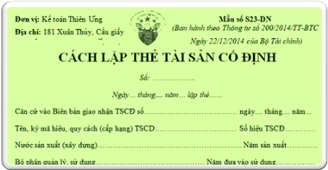

Hướng dẫn cách cách lập Thẻ Tải sản cố định theo Thông tư 200 và 133 – Mẫu S23-DN (S11-DNN) Thẻ Tải sản cố định dùng để theo dõi chi tiết từng TSCĐ của doanh nghiệp, tình hình thay đổi nguyên giá và giá trị hao mòn đã trích hàng năm của từng TSCĐ.
Căn cứ để lập thẻ TSCĐ:
- Biên bản giao nhận TSCĐ;
- Biên bản đánh giá lại TSCĐ;
- Bảng phân bổ khấu hao TSCĐ;
- Biên bản thanh lý TSCĐ;
- Các tài liệu kỹ thuật có liên quan.
Thẻ được lập cho từng đối tượng ghi tài sản cố định. Thẻ TSCĐ dùng chung cho mọi TSCĐ là nhà cửa, vật kiến trúc, máy móc thiết bị, cây, con, gia súc... Thẻ tài sản cố định bao gồm 4 phần chính:
--------------------------------------------------------------------
|
Đơn vị: Kế toán Diệu Tâm Địa chỉ: 181 Xuân Thủy, Cầu giấy |
Mẫu số S23-DN
Ngày 22/12/2014 của Bộ Tài chính)(Ban hành theo Thông tư số 200/2014/TT-BTC |
CÁCH LẬP THẺ TÀI SẢN CỐ ĐỊNH
Số: ……………….
Ngày… tháng.... năm… lập thẻ……
Ghi các chỉ tiêu chung về TSCĐ như: tên, ký mã hiệu, quy cách (cấp hạng); số hiệu, nước sản xuất (xây dựng); năm sản xuất, bộ phận quản lý, sử dụng; năm bắt đầu đưa vào sử dụng, công suất (diện tích) thiết kế; ngày, tháng, năm và lý do đình chỉ sử dụng TSCĐ.
Tên, ký mã hiệu, quy cách (cấp hạng) TSCD:….… Số hiệu TSCĐ……
Nước sản xuất (xây dựng)………….. Năm sản xuất………
Bộ phận quản lý, sử dụng………… Năm đưa vào sử dụng………
Công suất (diện tích thiết kế)…………………………
Đình chỉ sử dụng TSCĐ ngày…… tháng……… năm...
Lý do đình chỉ…………………………………
Ghi các chỉ tiêu nguyên giá TSCĐ ngay khi bắt đầu hình thành TSCĐ và qua từng thời kỳ do đánh giá lại, xây dựng, trang bị thêm hoặc tháo bớt các bộ phận... và giá trị hao mòn đã trích qua các năm.
| Số hiệu chứng từ | Nguyên giá tài sản cố định | Giá trị hao mòn tài sản cố định | ||||
| Ngày, tháng, năm | Diễn giải | Nguyên giá | Năm | Giá trị hao mòn | Cộng dồn | |
| A | B | C | 1 | 2 | 3 | 4 |
|
Ghi số hiệu chứng từ của TSCĐ tại thời điểm đó. |
Ghi ngày, tháng, năm của chứng từ của TSCĐ tại thời điểm đó. | Ghi lý do hình thành nên nguyên giá của TSCĐ tại thời điểm đó. | Ghi nguyên giá của TSCĐ tại thời điểm đó. | Ghi năm tính giá trị hao mòn TSCĐ. | Ghi giá trị hao mòn TSCĐ của từng năm. | Ghi tổng số giá trị hao mòn đã trích cộng dồn đến thời điểm vào thẻ. Đối với những TSCĐ không phải trích khấu hao nhưng phải tính hao mòn (như TSCĐ dùng cho sự nghiệp, phúc lợi, ...) thì cũng tính và ghi giá trị hao mòn vào thẻ. |
Dụng cụ phụ tùng kèm theo
| Số TT | Tên, quy cách dụng cụ, phụ tùng | Đơn vị tính | Số lượng | Giá trị |
| A | B | C | 1 | 2 |
| Ghi số thứ tự của dụng cụ, phụ tùng. | Ghi tên quy cách của dụng cụ, phụ tùng. | Ghi đơn vị tính của dụng cụ, phụ tùng. | Ghi số lượng của từng loại dụng cụ, phụ tùng kèm theo TSCĐ. | Ghi giá trị của từng loại dụng cụ, phụ tùng kèm theo TSCĐ. |
Ghi giảm TSCĐ chứng từ số:…… ngày.... tháng.... năm………
Lý do giảm: …… Ghi số ngày, tháng, năm của chứng từ ghi giảm TSCĐ và lý do giảm.
|
Người lập biểu
(Ký, họ tên) |
Kế toán trưởng (Ký, họ tên) |
Ngày ... tháng ... năm ...
Giám đốc
(Ký, họ tên, đóng dấu)
|
--------------------------------------------------------------------
- Thẻ TSCĐ do kế toán TSCĐ lập, kế toán trưởng ký soát xét và giám đốc ký. Thẻ được lưu ở phòng, ban kế toán suốt quá trình sử dụng tài sản.
Ghi chú: Đối với trường hợp thuê dịch vụ làm kế toán, làm kế toán trưởng thì phải ghi rõ số Giấy chứng nhận đăng ký hành nghề dịch vụ kế toán, tên đơn vị cung cấp dịch vụ kế toán.
Tải mẫu Thẻ Tài sản cố định theo Thông tư 200 word:
Tải Mẫu Thẻ tài sản cố định theo Thông tư 133 word:
Tải Mẫu Thẻ tài sản cố định trên Excel theo TT 200 và 133:
Trường hợp bạn không tải về được thì làm theo cách sau:
Bước 1: Comment mail vào phần bình luận bên dưới
Bước 2: Gửi yêu cầu vào mail: ketoandieutam@gmail.com (Tiêu đề ghi rõ Mẫu sổ muốn tải)
Xem thêm: Cách lập sổ Tài sản cố định
--------------------------------------------------------------------
